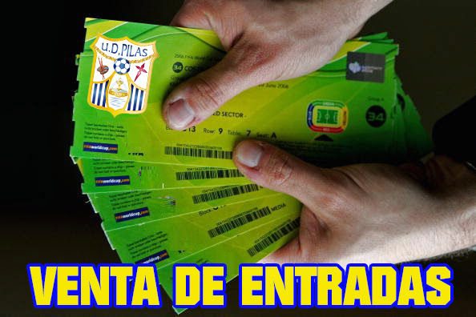

En esta temporada 2022/2023 en la que cumplimos el Cincuentenario, la campaña de abonos tiene el siguiente lema: LO CELEBRAMOS Y PRESUME DE SER TITULAR.
Ello se debe a que el nombre de todas las personas que saquen su carnet de socio figurará en la camiseta conmemorativa del Cincuentenario que nuestro equipo estrenará en fechas próximas.
Se trata, sin duda, de un aliciente añadido para apoyar al equipo en lo económico y en lo deportivo. La Junta Directiva, además, considerando las circunstancias difíciles por las que atravesamos, ha decidido rebajar los precios de los abonos, que son los siguientes:
| TIPO ABONO | {{element.tipo}} | PRECIO (€) | {{element.precio}} |
|---|
Puedes adquirir tus entradas para ver a la Ud Pilas, una hora antes del horario fijado para el encuentro en las taquillas del Estadio Municipal Manuel Leonardo.
